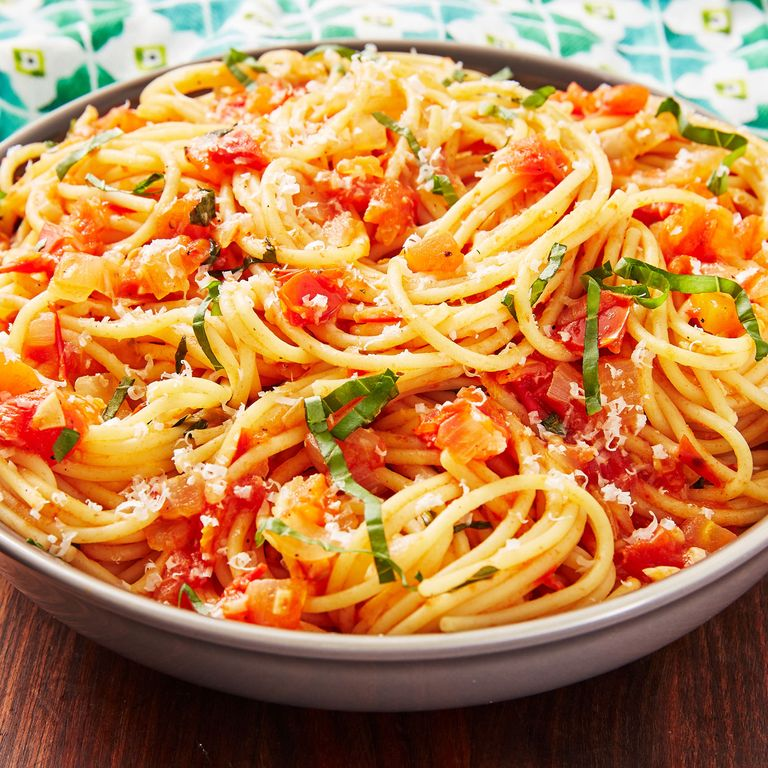

Pasta Pomodoro

Description
Pasta pomodoro, a simple and classic yet sophisticated dish catered to highlight the beautiful freshness of tomatoes. With a prep time of 15 minutes and a total cook time of 50 minutes, this is a dish that any level cook can follow along for a quick meal on the fly!
Feel free to make adjustments to the ingredients as you see fit. You can always use a different noodle based on your preferences, add a protein source, and even add veggies of your choice to get all those macro- AND micro- nutrients for a healthy well-balanced meal. Follow along with the directions below and post pictures of your pasta pomodoro with or without all of the variations you make to your dish.
Ingredients
- 1 lb. spaghetti
- 2 tbsp. extra-virgin olive oil (EVOO)
- 1 small yellow onion, chopped
- 3 cloves garlic, minced
- 4 medium tomatoes, chopped (about 4 cups)
- Kosher salt
- Freshly ground black pepper
- Pinch crushed red pepper flakes
- 2 tbsp. thinly sliced basil, plus more for serving
- Freshly grated Parmesan, for serving
Steps
- In a large pot of boiling salted water, cook pasta until al dente according to package directions. Reserve 1/2 cup of pasta water before draining.
- In another large pot over medium heat, heat oil. Add onion and cook until soft (about 6 min). Add garlic and cook until fragrant (about 1 min more).
- Add tomatoes and cook until juices are released. Season with salt, pepper, and a pinch of red pepper flakes. Reduce heat to low and simmer for 15 min. Stir in basil
- Add spaghetti and 1/4 cup pasta water. Toss to combine. Add more pasta water to bring sauce together as needed.
- Serve topped with Parmesan and more basil